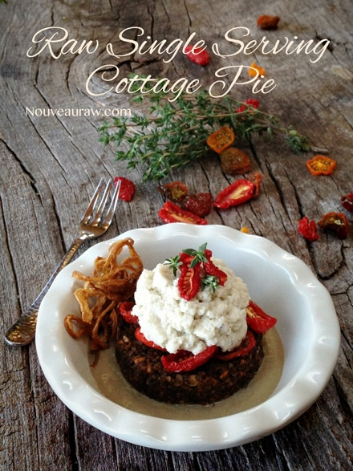

Single Serving Cottage Pie

This dish turned out beautifully and is quite filling, so don’t be fooled by its petite size. Each component is rich and dense in nutrients; your body will definitely thank you.
This time I am not going to provide my normal instructions on how to put this dish together. I think the photo to the right says it all. You can, of course, layer it in any sequence that you desire. Personally, I visually loved how the burger was nestled in the creamy gravy. As you drive your fork down through the cauliflower mash, it will collect a sampling of each layer… giving you an incredible one-bite-wonder.
I recommend warming this dish before serving. Start by submerging the serving plate into a sink filled with very hot for 5 minutes. Remove and pat dry.
Quickly layer on the components except for the Raw Crispy Shoestring Onions. Those will be added right before serving. Now slide the entire dish into the dehydrator and warm at 115 degrees (F) for 1 hour or until it is warm enough for your liking. Remove, top with onions and enjoy!
Recipe Mashup:
© AmieSue.com